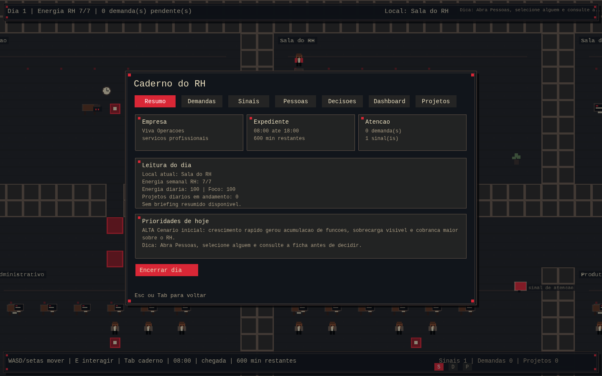
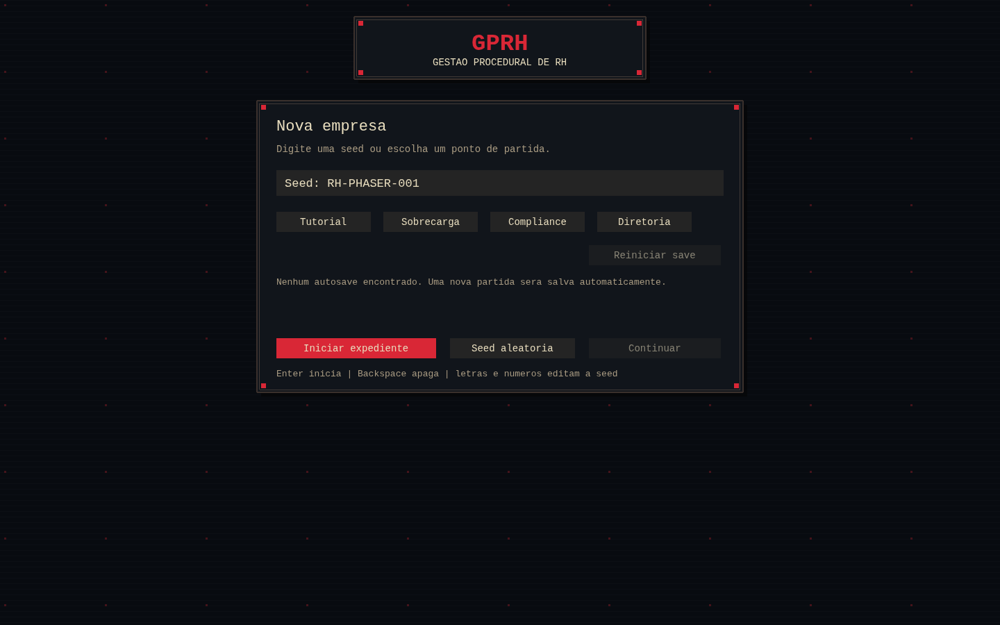

Simulador Procedural de Gestão de RH
Neste jogo, cada empresa aparece de um jeito diferente e o profissional de RH precisa conhecer as pessoas antes de decidir o que fazer.

Sobre o projeto
Este projeto junta duas áreas que fazem parte da minha trajetória: psicologia e programação. A ideia foi criar um jogo de gestão de RH em que o jogador não recebe todas as respostas prontas e precisa conhecer a empresa antes de tomar decisões.
Cada partida gera uma organização diferente, com seus setores, funcionários, relações, demandas e dificuldades. O jogador circula pelos espaços, conversa com as pessoas e tenta entender o que está acontecendo. Uma decisão pode funcionar em uma empresa e produzir outro efeito em uma situação diferente.
Ainda é um projeto em desenvolvimento. Além de programar as regras, venho aprendendo a organizar uma simulação grande em partes menores e a transformar conceitos como clima, confiança, conflitos, carga de trabalho e produtividade em elementos que possam aparecer durante o jogo.
O que venho aprendendo
- Transformar conceitos de RH em situações que podem acontecer dentro de um jogo.
- Gerar empresas e equipes diferentes a cada partida.
- Dividir um projeto maior em partes que possam ser testadas e revistas.
Com o que construí
- JavaScript
- Node.js
- Phaser
- Geração procedural
- Testes automatizados
Por dentro do projeto
